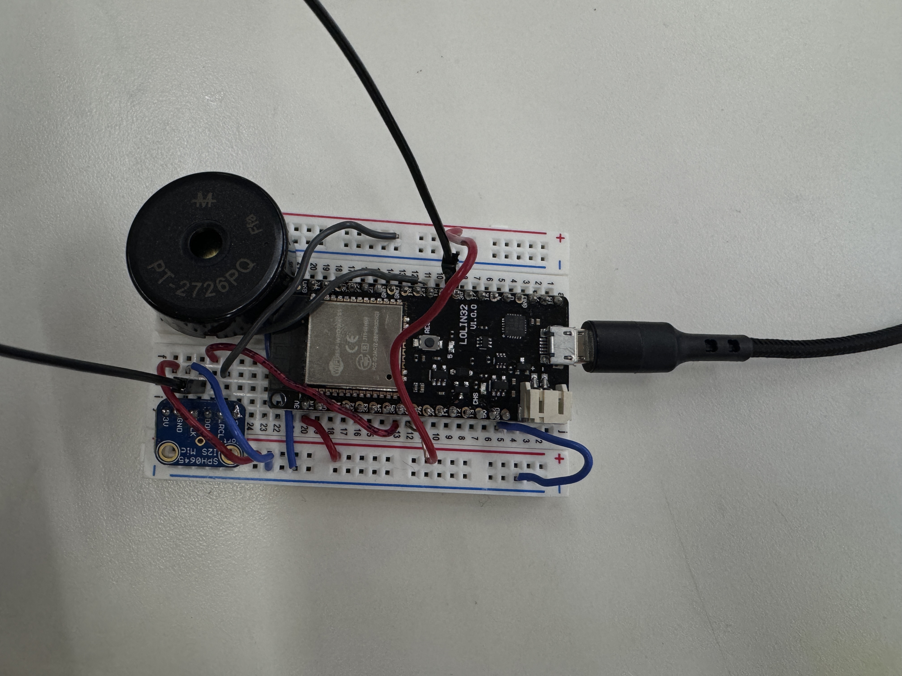

<div class="textcontainer">
<p class="margin"> </p>
<h3>Week 9: Radio, WiFi, Bluetooth (IoT)</h3>
<p class="margin"> </p>
<div class="flexrow">
<a id="btn" href="LAN_asg.zip" download>Download my files from this week!
</a>
</div>
<p class="margin"> </p>
<h4>Assignment: Program something with IOT</h4>
<p> For this assignment, we (Faith and Suhani) worked on a program that allows us to play notes/songs depending on how loud the room is. This was motivated by our personalities that are such we easily get lost with noise around us. That is, if those around us are loud, we tend to focus on the loudness, and we thought that maybe playing something would make us focus more on what is playing than the conversations around us. So, we wanted to be able to control this using a LAN web server as well as just the circuit. We wanted to be able to play a specific song/notes succession, which we labeled as low beat, upbeat, or calm song.
The way it works is that we set our tresholds on what each level means. Lowbeat is when there is anything quiet room atmosphere. Calm song would correspond to just chatter in the room, and finally upbeat to any noise that is above chatter (like drilling happening or a party). We are able to control this by either clicking on the website to indicate what sound level we are at, or the circuit will just play a note depending on the microphone reading.
<br>
<p> Lessons Learned from this code: It looks like how it would work is that someone presses a a link and a song plays, then depending on what they pressed, that indicates what is playing. Our initial guess was that once we get it to play from the website then we can easily engage the sensor now. However, it turned out that this was being controlled from the website, so the sensor didn't work. We also learned that the buzzer and microphone can't be on the same pin (apparently they don't like each other, we still don't know why/how). To manage this, we had to find a way of calling functions outside the LAN declaration and setup.
<br>
<p>Attached is the initial code design that didn't allow us to use sensors to control what was playing. </p>
<br>
<a id="btn" href="lan_asgmt.zip" download>Download my files from this week!</a>
<br>
<p>This is the circuit design for this week</p>
<br>
<p></p>
Another issue that we didn't think about when deciding on the project was the fact that the microphone is going to pick up the sound from the buzzer, and this was going to interfere with the set tresholds. Unfortunately, we couldn't do anything about this. What we had was that the atmosphere (or reading from the serial monitor) would indicate that it's quiet then start playing a quiet song - but as the song plays, the reading would change to maybe loud or medium sound level, which would then change what the buzzer was playing. But, since buzzers don't play continuously (or at least the songs we had to play had spaces between notes), we could then have the reading back to low and the cycle goes on. Because of this, unless it was a loud room and the readings don't change with the buzzer as it's already above treshold, we couldn't get the buzzer to play low songs as the level set to it would interfere with the buzzer. Here is a video to indicate this.
<br>
<<video width="640" height="360" controls autoplay muted loop>
<source src="changing.mp4" type="video/mp4">
I hope your browser supports the video tag.
</video>
<br>
Fortunately, we also have success where the buzzer played a song all the way through without interruption because it was an ideal background noise.
<<video width="640" height="360" controls autoplay muted loop>
<source src="nice.mp4" type="video/mp4">
I hope your browser supports the video tag.
</video>
<br>
Quite content with the results and getting to know how LANs and Circuits work together and what considerations are needed when making circuits that can be controlled differenlty.
<br>
</div>